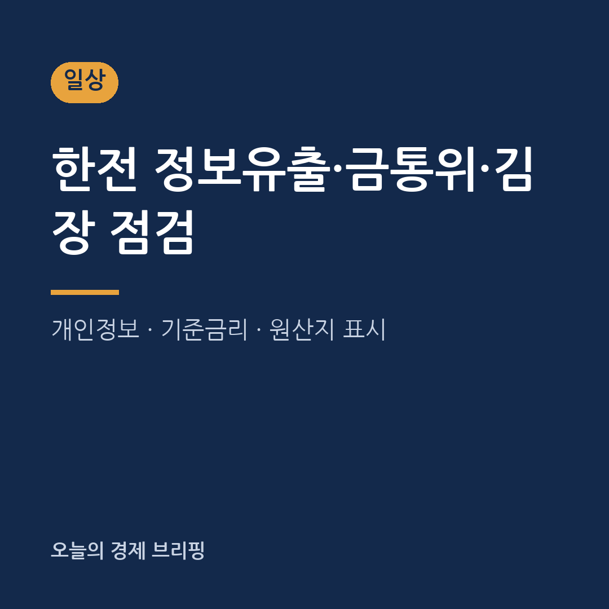

2026-11-22-1824-tistory 발행 키트 · 이 페이지는 검색에 노출되지 않습니다.
제목
카테고리
일상태그
본문 (그림·표 포함)
휴대폰 블로그 앱에서는 그림이 같이 붙지 않을 수 있어요. 그때는 [글자만 복사] 후 아래 이미지를 저장해 [그래프1]·[표1] 자리에 첨부하세요.

핵심 결론부터 정리합니다. 이번 주에는 한국전력 고객정보 유출 소식에 대한 대응, 26일 한국은행 금융통화위원회 결과, 23일부터 시작되는 김장철 수산물 원산지 특별점검, 그리고 월요일 출근길 결빙 위험을 함께 챙길 필요가 있습니다.
네 가지 모두 22일 보도에서 확인되는 내용이며, 일정과 확인할 점을 표로 먼저 정리했습니다.
주간 생활 이슈 일정 정리
| 구분 | 시점 | 핵심 내용 | 확인할 점 |
|---|---|---|---|
| 개인정보 유출 | 22일 보도 | 한전 고객 정보 150여만건, 주민·계좌번호 포함 | 한전 공식 안내, 수상한 연락 대응 |
| 기준금리 | 26일 | 0.25%포인트 인상 전망, 인상 시 3.25% | 변동금리 대출 이자 변화 |
| 원산지 점검 | 23일~12월 4일 | 김장철 수산물 원산지 표시 특별점검 | 구매 시 표시 확인, 해수부 공지 |
| 날씨 | 23일(월) | 대부분 지역 비 또는 눈, 영하권 어는 비 | 출발 시간, 이동 속도 |
출처: 연합뉴스, 매일경제, 세계일보 보도
▶ 한전 고객 개인정보 유출 보도
배경: 보도에 따르면 한국전력에서 직원 개인정보 유출에 이어 이용 고객의 정보까지 외부로 나간 사고가 확인되었습니다.
핵심 내용: 유출 규모는 150여만 건이며, 항목에는 주민등록번호와 계좌번호가 포함된 것으로 전해졌습니다. 다만 유출 경위와 피해 여부 등 세부 사항은 이번 자료만으로는 확인되지 않습니다.
영향과 확인할 점: 주민등록번호와 계좌번호가 함께 노출되면 명의 도용이나 금융 사기에 악용될 우려가 있습니다. 한전 이용 고객은 회사의 공식 안내 여부를 확인하고, 출처가 불분명한 문자·전화의 링크와 요구에 응하지 않는 것이 기본 대응입니다.
▶ 26일 금융통화위원회와 대출 이자
배경: 고물가가 지속되는 가운데 반도체 호황으로 성장률 전망이 잇달아 상향되고 있습니다. 한국은행은 앞선 두 차례 인상의 파급 효과를 점검하는 단계에 있다고 보도되었습니다.
핵심 내용: 한은 출신 시장 전문가들은 26일 금융통화위원회(한국은행의 기준금리 결정 회의)에서 기준금리가 0.25%포인트 오를 것으로 내다봤습니다. 인상될 경우 기준금리는 3.25%가 됩니다.
영향과 확인할 점: 변동금리 대출이나 곧 만기가 돌아오는 대출이 있다면 금리 결정 이후 이자 부담 변화를 계산해 둘 필요가 있습니다. 같은 시기에 보도된 금융 칼럼은 신용점수의 작은 차이가 대출 문턱과 이자 총액에 영향을 줄 수 있다고 짚었습니다. 본인 점수를 미리 조회해 보는 것이 좋습니다.
▶ 김장철 수산물 원산지 특별점검
해양수산부는 김장철을 맞아 23일부터 12월 4일까지 수산물 원산지 표시 위반을 단속하는 특별점검을 진행합니다.
소비자 입장에서는 이 기간에도 구매 시 원산지 표시가 있는지, 표기 내용이 가격표와 포장에서 일치하는지 직접 보는 습관이 도움이 됩니다. 점검 대상 품목과 처벌 기준 등 세부 내용은 이번 자료에서 확인하지 못했으므로 해수부 공지를 참고하시기 바랍니다.
▶ 월요일 출근길 결빙 주의
23일은 전국이 대체로 흐리고 대부분 지역에서 비 또는 눈이 예보되었습니다. 영하권 지역에서는 어는 비(영하의 지표면에 닿아 얼어붙는 비)가 내릴 수 있다는 주의가 함께 나왔습니다.
젖은 노면처럼 보여도 얼어 있을 수 있어 보행과 운전 모두 속도를 낮추고 출발 시간을 앞당기는 것이 안전합니다.
▶ 정리
1. 한전 고객정보 150여만 건 유출: 공식 안내 확인, 수상한 연락 대응 금지.
2. 26일 금통위: 0.25%포인트 인상 전망, 인상 시 3.25%. 변동금리 대출 이자 점검.
3. 23일~12월 4일 원산지 특별점검, 월요일 영하권 어는 비: 구매 시 표시 확인, 출근길 여유 있게 이동.
출처 (본문 맨 아래에 붙여넣기 권장)
- 연합뉴스, 한전, 고객 등 개인정보 150여만건 유출…주민·계좌번호도 포함, https://www.yna.co.kr/view/AKR20261122042800003 - 매일경제, "고물가에 추가 긴축 유력 … 26일 기준금리 0.25%P↑", https://www.mk.co.kr/news/economy/12215695 - 세계일보, 물가 상승·성장률 상향 조정… 한은, 기준금리 3.25%로 올리나, https://www.segye.com/newsView/20261122507397 - 매일경제, ‘등급’ 아닌 ‘점수제’로 평가되는 내 신용…점수에 따른 대출이자 격차는? [최병일의 금융 리터러시 2.0], https://www.mk.co.kr/news/economy/12215658 - 연합뉴스, 해수부, 내달 4일까지 김장철 수산물 원산지 표시 특별점검, https://www.yna.co.kr/view/AKR20261120134300030 - 연합뉴스, 월요일 전국에 비·눈…영하권 출근길 '어는 비' 주의, https://www.yna.co.kr/view/AKR20261122039200530